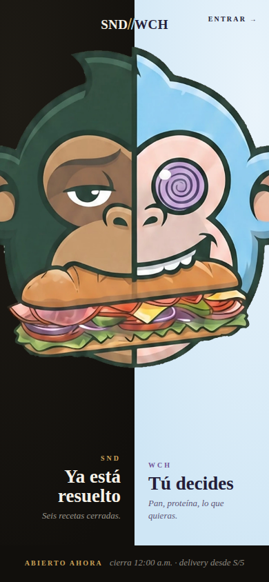
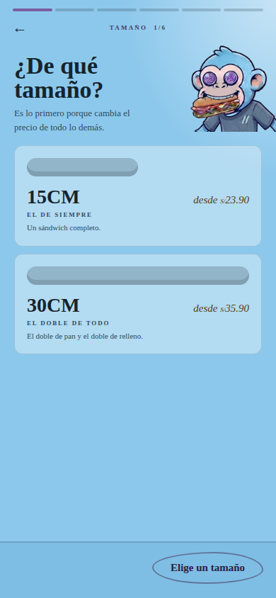
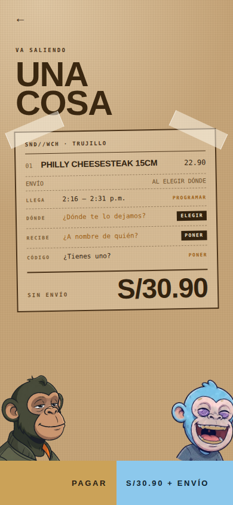

No va escondido en una sección «Y además»: aparece en la puerta, como un plato más en el Mundo SANDO, al empezar a armar en el de WICHO y en el carrito. El pack de 5 es el mismo pedido en grupo llenado por una sola persona: desde 5 sándwiches el más barato va gratis, sin regla de dinero nueva. Lo punteado en naranja es lo nuevo; lo demás es la app tal como está hoy.

Mandas un enlace y cada uno elige el suyo desde su celular, Signature o armado. Tú pagas una vez y llega todo junto.


Lo demás que iba en «Y además»: Bebidas sigue ofreciéndose al tocar «Lo quiero» y queda un acceso directo en la barra de arriba de cada mundo. Tus puntos y Favoritos quedan dentro de «Entrar / Tú» (esquina de la puerta). La línea legal va en la puerta (1) y al pie del pago.